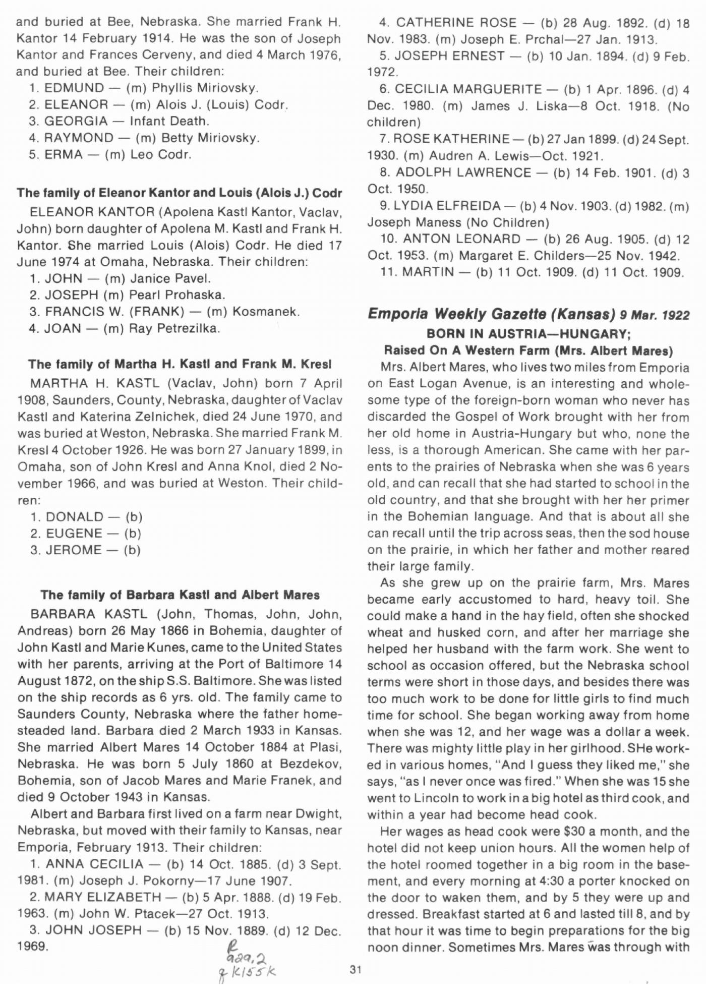

The book · The Family of John Kastl
Page 31 The family of Eleanor Kantor and Louis (Alois J.) Codr


Transcription
and buried at Bee, Nebraska. She married Frank H. Kantor 14 February 1914. He was the son of Joseph Kantor and Frances Cerveny, and died 4 March 1976, and buried at Bee. Their children:
- EDMUND — (m) Phyllis Miriovsky.
- ELEANOR — (m) Alois J. (Louis) Codr.
- GEORGIA — Infant Death.
- RAYMOND — (m) Betty Miriovsky.
- ERMA — (m) Leo Codr.
The family of Eleanor Kantor and Louis (Alois J.) Codr
ELEANOR KANTOR (Apolena Kastl Kantor, Vaclav, John) born daughter of Apolena M. Kastl and Frank H. Kantor. She married Louis (Alois) Codr. He died 17 June 1974 at Omaha, Nebraska. Their children:
- JOHN — (m) Janice Pavel.
- JOSEPH (m) Pearl Prohaska.
- FRANCIS W. (FRANK) — (m) Kosmanek.
- JOAN — (m) Ray Petrezilka.
The family of Martha H. Kastl and Frank M. Kresl
MARTHA H. KASTL (Vaclav, John) born 7 April 1908, Saunders, County, Nebraska, daughter of Vaclav Kastl and Katerina Zelnichek, died 24 June 1970, and was buried at Weston, Nebraska. She married Frank M. Kresl 4 October 1926. He was born 27 January 1899, in Omaha, son of John Kresl and Anna Knol, died 2 November 1966, and was buried at Weston. Their children:
- DONALD — (b)
- EUGENE — (b)
- JEROME — (b)
The family of Barbara Kastl and Albert Mares
BARBARA KASTL (John, Thomas, John, John, Andreas) born 26 May 1866 in Bohemia, daughter of John Kastl and Marie Kunes, came to the United States with her parents, arriving at the Port of Baltimore 14 August 1872, on the ship S.S. Baltimore. She was listed on the ship records as 6 yrs. old. The family came to Saunders County, Nebraska where the father homesteaded land. Barbara died 2 March 1933 in Kansas. She married Albert Mares 14 October 1884 at Plasi, Nebraska. He was born 5 July 1860 at Bezdekov, Bohemia, son of Jacob Mares and Marie Franek, and died 9 October 1943 in Kansas.
Albert and Barbara first lived on a farm near Dwight, Nebraska, but moved with their family to Kansas, near Emporia, February 1913. Their children:
- ANNA CECILIA — (b) 14 Oct. 1885. (d) 3 Sept. 1981. (m) Joseph J. Pokorny—17 June 1907.
- MARY ELIZABETH — (b) 5 Apr. 1888. (d) 19 Feb. 1963. (m) John W. Ptacek—27 Oct. 1913.
- JOHN JOSEPH — (b) 15 Nov. 1889. (d) 12 Dec. 1969.
- CATHERINE ROSE — (b) 28 Aug. 1892. (d) 18 Nov. 1983. (m) Joseph E. Prchal—27 Jan. 1913.
- JOSEPH ERNEST — (b) 10 Jan. 1894. (d) 9 Feb. 1972.
- CECILIA MARGUERITE — (b) 1 Apr. 1896. (d) 4 Dec. 1980. (m) James J. Liska—8 Oct. 1918. (No children)
- ROSE KATHERINE — (b) 27 Jan 1899. (d) 24 Sept. 1930. (m) Audren A. Lewis—Oct. 1921.
- ADOLPH LAWRENCE — (b) 14 Feb. 1901. (d) 3 Oct. 1950.
- LYDIA ELFREIDA — (b) 4 Nov. 1903. (d) 1982. (m) Joseph Maness (No Children)
- ANTON LEONARD — (b) 26 Aug. 1905. (d) 12 Oct. 1953. (m) Margaret E. Childers—25 Nov. 1942.
- MARTIN — (b) 11 Oct. 1909. (d) 11 Oct. 1909.
Emporia Weekly Gazette (Kansas) 9 Mar. 1922
BORN IN AUSTRIA—HUNGARY; Raised On A Western Farm (Mrs. Albert Mares)
Mrs. Albert Mares, who lives two miles from Emporia on East Logan Avenue, is an interesting and wholesome type of the foreign-born woman who never has discarded the Gospel of Work brought with her from her old home in Austria-Hungary but who, none the less, is a thorough American. She came with her parents to the prairies of Nebraska when she was 6 years old, and can recall that she had started to school in the old country, and that she brought with her her primer in the Bohemian language. And that is about all she can recall until the trip across seas, then the sod house on the prairie, in which her father and mother reared their large family.
As she grew up on the prairie farm, Mrs. Mares became early accustomed to hard, heavy toil. She could make a hand in the hay field, often she shocked wheat and husked corn, and after her marriage she helped her husband with the farm work. She went to school as occasion offered, but the Nebraska school terms were short in those days, and besides there was too much work to be done for little girls to find much time for school. She began working away from home when she was 12, and her wage was a dollar a week. There was mighty little play in her girlhood. SHe worked in various homes, "And I guess they liked me," she says, "as I never once was fired." When she was 15 she went to Lincoln to work in a big hotel as third cook, and within a year had become head cook.
Her wages as head cook were $30 a month, and the hotel did not keep union hours. All the women help of the hotel roomed together in a big room in the basement, and every morning at 4:30 a porter knocked on the door to waken them, and by 5 they were up and dressed. Breakfast started at 6 and lasted till 8, and by that hour it was time to begin preparations for the big noon dinner. Sometimes Mrs. Mares was through with
Transcriber’s notes
Two columns. The children list of Barbara Kastl and Albert Mares starts at the bottom of the left column (1-3) and continues at the top of the right column (4-11). Right column then begins a reprinted newspaper article (Emporia Weekly Gazette, 9 Mar. 1922) that runs on to the next page. Eleanor Kantor entry prints 'born daughter of' with no date (gap in original). Kresl children have empty (b) fields in print. 'Saunders, County' comma and 'SHe' capitalization are as printed. Small mark over 'was' in last line is a print/scan blemish.
Library stamps and handwriting (not part of the book)
- Handwritten library call number at bottom center near page number: R 929.2 qK155k